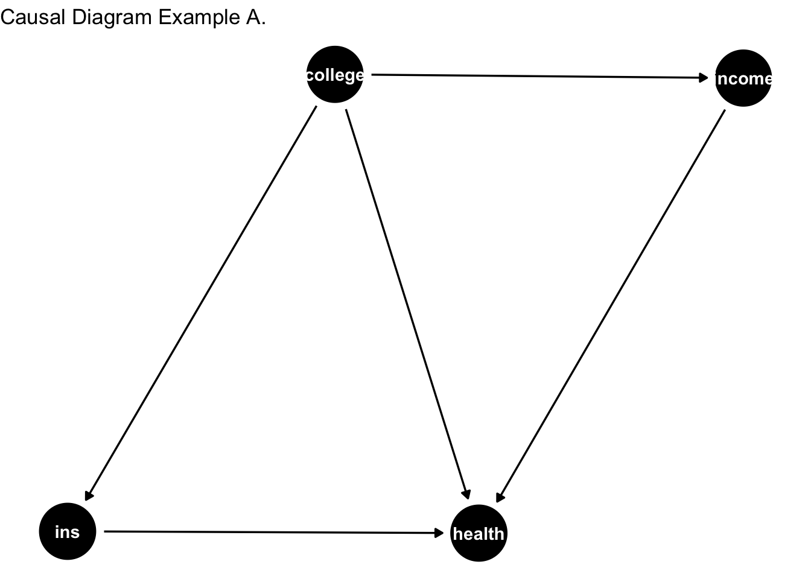
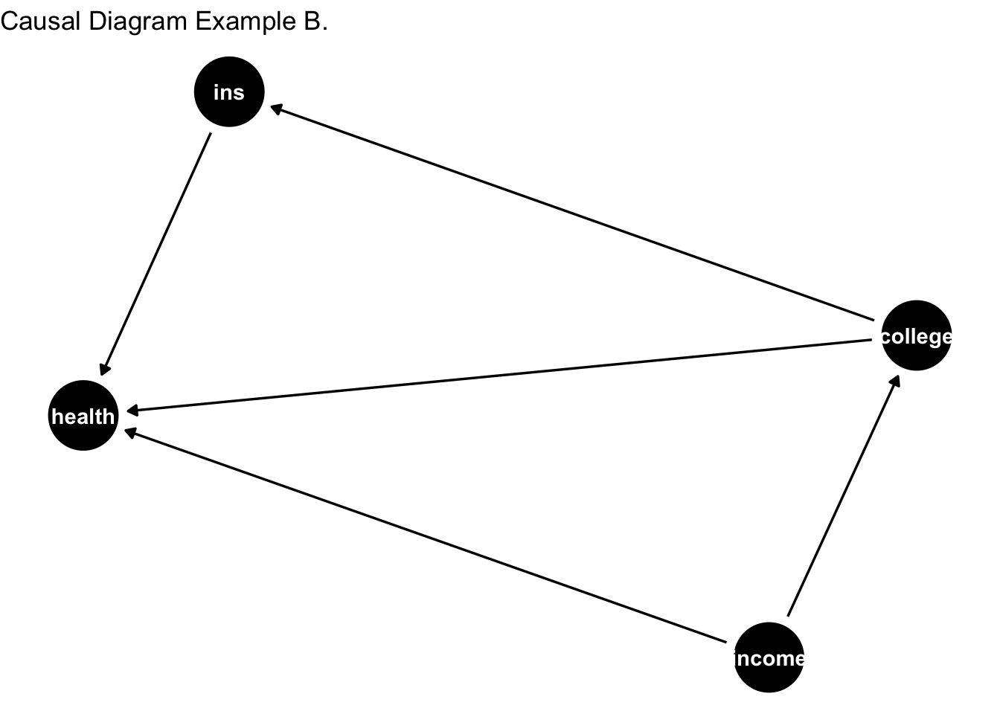

2.6 Unconfoundedness assumption
Most of the time the treatment assignment may not be fully random but can be driven by some selective covariates. Referring to the tutoring example, it may be unethical to disallow someone in the control group who wants to attend the tutoring sessions. As such, tutoring sessions may be voluntarily held, where students can select whether to attend the session.
Say, females and Blacks are more likely to attend the tutoring session and both of these variables are also likely to yield higher potential outcome. This means that females and Blacks are more likely to have higher exam score in absence of the treatment compared to males and Whites. It is easy to see that the treatment assignment is correlated with the potential outcomes and the independence assumption is violated. This is true in many cases of observational settings and even in randomized experiments. We require adjustments before being able to estimate treatment effects in such cases.
If we understand the treatment mechanism fairly well then we can still proceed further to estimate the treatment effects. For example, suppose the treatment assignment is (voluntarily) more tilted towards females than males and Blacks than Whites. In this case, we would want to invoke unconfoundedness (conditional independence) assumption.2 Formally, this states that \(Y_i(0), \; Y_i(1) \perp W_i | X_i\). This means that conditional upon the covariates the treatment assignment is random.
To estimate ATT one would want to first estimate ATT within each strata: \(i)\) female-Black, \(ii)\) female-White, \(iii)\) male-Black, and \(iv)\) male-White, and take a weighted average of the strata-specific ATEs by using the proportion of the sample in the given strata as weights. The conditional independence assumption means that within each strata treatment assignment is random. The following code first estimates the strata specific ATTs and then summarizes them using the weighted average. Note that the true treatment effect is 10.
fun_ATE2 <- function(N, tau){
# @arg tau: true treatment effect
# @arg N: sample size
# Return tau_hat: estimate of the treatment effect using conditional randomness assumption
# Return tau_hat2: estimate of the treatment effect wrongly using unconditional independence assumption
# Return reg_tau: estimate from conditioning using regression but from a misspecified model
# create pseudo data
gender <- rbinom(N, size = 1, p = 0.5)
race <- rbinom(N, size = 1, p = 0.5)
W <- rbinom(N, size = 1, p = 0.2 + 0.4 * (gender > 0) + 0.2 * (race > 0))
Y <- 40 + 10 * W + gender * 2 + race * 5 + 25 * race * gender + rnorm(n = N, mean = 5, sd = 5)
# female-Blacks
tau_hat1 <- mean(Y[which(W == 1 & gender == 1 & race == 1)]) - mean(Y[which(W == 0 & gender == 1 & race == 1)])
w1 <- sum(gender == 1 & race == 1) / N
# female-Whites
tau_hat2 <- mean(Y[which(W == 1 & gender == 1 & race == 0)]) - mean(Y[which(W == 0 & gender == 1 & race == 0)])
w2 <- sum(gender == 1 & race == 0) / N
# male-Blacks
tau_hat3 <- mean(Y[which(W == 1 & gender == 0 & race == 1)]) - mean(Y[which(W == 0 & gender == 0 & race == 1)])
w3 <- sum(gender == 0 & race == 1) / N
# male-Whites
tau_hat4 <- mean(Y[which(W == 1 & gender == 0 & race == 0)]) - mean(Y[which(W == 0 & gender == 0 & race == 0)])
w4 <- sum(gender == 0 & race == 0) / N
tau_hat <- tau_hat1 * w1 + tau_hat2 * w2 + tau_hat3 * w3 + tau_hat4 * w4
tau_hat2 <- mean(Y[W == 1]) - mean(Y[W == 0])
# a mis-specified regression model
reg <- lm(Y ~ W + gender)
reg_tau <- coefficients(reg)[[2]]
return(list(table(gender[W == 1]), table(race[W == 1]), tau_hat, tau_hat2, reg_tau))
}
ATE2_results <- fun_ATE2(N = 20000, tau = 10)
print(paste(c("treated males: ", "treated females: ") , ATE2_results[[1]]))## [1] "treated males: 2983" "treated females: 7102"print(paste(c("treated Whites: ", "treated Blacks: ") , ATE2_results[[2]])) ## [1] "treated Whites: 4065" "treated Blacks: 6020"print(paste("ATE conditioned on Xs is :", ATE2_results[[3]]))## [1] "ATE conditioned on Xs is : 9.91834954520539"print(paste("ATE not conditioned on Xs is :", ATE2_results[[4]]))## [1] "ATE not conditioned on Xs is : 19.2941642000187"# get tau_hats from replications
store <- rep(0, reps)
store2 <- store
store.reg <- store
for(i in 1:reps){
ATE.results <- fun_ATE2(N = 20000, tau = 10)
store[i] <- ATE.results[[3]]
store2[i] <- ATE.results[[4]]
store.reg[i] <- ATE.results[[5]]
}
# histogram of tau_hat conditioned
hist(store, main = "tau hats conditioned")
print(paste("The standard error from the conditioned approach is:", sd(store)))## [1] "The standard error from the conditioned approach is: 0.0814601250615582"hist(store2, main = "tau hats not conditioned")
The ATT estimate is much closer to the true parameter, 10, when conditioned upon the covariates as compared to an unconditional approach (where the distribution of ATT estimate is centered around 19.3). This example highlights the importance of conditioning on \(X\)s when evaluating the treatment effects if the treatment assignment is correlated with the potential outcomes. In this case, Blacks and females are more likely to have higher scores in general even without the treatment and both of these subgroups are also more likely to be treated. Treatment is not only non-random but is systematically correlated with the outcomes.
Since we have the perfect information on the treatment assignment mechanism, after conditioning for the covariates the treatment assignment is essentially random. In other words, within Black vs. White race groups, for example, the treatment assignment is randomly allocated. This allows estimation of ATE for each subgroup or strata. After estimating ATE for each strata, the ATEs are averaged using the sample size of the strata as weights.
One problem with the approach highlighted above is that in complex settings, with many determinants (multi-dimensionality) of treatment or in presence of continuous covariates, the sub-space required for the analyses highlighted above will be thinned out too soon. As an alternative, regression framework has been rigorously used as a tool-kit to control for covariates. While there are benefits of using a regression framework, it is by nomeans a panacea. This is especially true if the regression models are misspecified. Below we will use a misspecified version of the regression model to see if we can recover the treatment estimate close to the true value.
print(paste("ATE estimated from misspecified regression model:", ATE2_results[[5]]))## [1] "ATE estimated from misspecified regression model: 14.1794224498239"print(paste("The standard error is:", sd(store.reg)))## [1] "The standard error is: 0.182411808545127"hist(store.reg, main = "Treatment effects using regression")
The terms unconfoundedness and conditional independence (\(heart\; disease \perp age \; | \; cholestrol\)) are used interchangebly in causal inference literature. Conditional independence is a broader term that relates to the general field of probability and statistics, whereas unconfoundedness is more specific to causal inference. Unconfoundedness implies a specific kind of conditional independence, specific to causal inference.↩︎